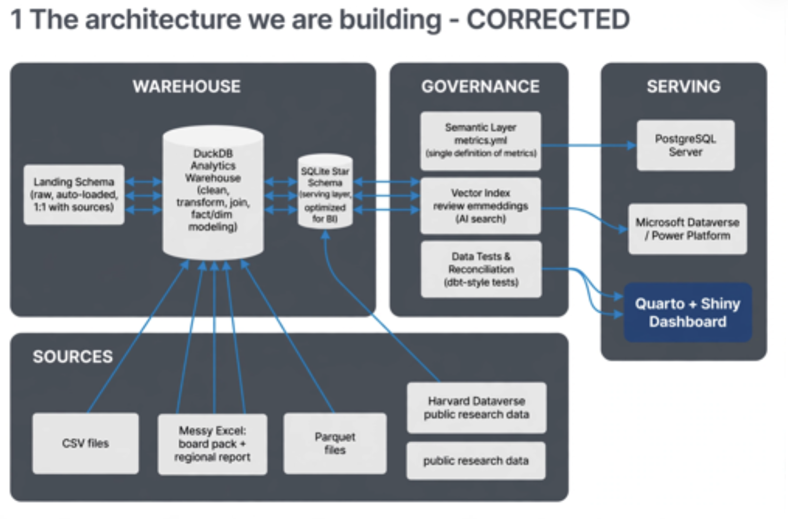

1 The architecture, end to end
🟢 Novice Read this chapter before touching code. Return to it whenever you feel lost.
| What | A reference design for turning scattered data into trusted, reusable decisions |
| Why | So that “revenue” means one thing, every number can be traced to its source, and a bad file never reaches the chief executive officer (CEO)’s dashboard |
| When | Any time more than one person, report or system depends on the same data |
| Who | Everyone: business owners define the metrics, analysts build them, information technology (IT) secures them, leaders consume them |
1.1 The problem it solves
Picture a Monday executive meeting. Sales says Q3 revenue was ₦6.2bn. Finance says ₦5.9bn. The regional manager’s spreadsheet says ₦6.4bn. Forty minutes go on arguing about whose number is right instead of what to do about it.
Nobody is lying. Each number came from a different file, cleaned differently, with a different idea of what “revenue” includes. The architecture in this book exists to make that meeting impossible. It does three things:
- Every source enters through one door, and is cleaned once, by rules everyone can read.
- Every metric is defined once, in a semantic layer with a named owner.
- Nothing is published until it passes tests, and when a test fails, people get alerted and yesterday’s good numbers stay live.
1.2 The six layers

| # | Layer | What it is | What it’s used for | When you need it | Typical tools | Failure mode if missing |
|---|---|---|---|---|---|---|
| 1 | Sources | Every place data is born: files, operational databases, software as a service (SaaS) apps, Dataverse, official statistics (World Bank, International Monetary Fund (IMF), United Nations Conference on Trade and Development (UNCTAD), United Nations (UN) Comtrade, National Bureau of Statistics (NBS), Central Bank of Nigeria (CBN)), research repositories, text | Recording business events | Always: you don’t build these, you inherit them | Excel, core banking, SAP, Dynamics 365, supervisory control and data acquisition (SCADA), human resources information system (HRIS) | n/a |
| 2 | Ingest | Connectors that copy data in, inventory it and stamp it with lineage | Getting data in repeatably without hand-copying | From the second time you load the same file | Database Interface (DBI), readxl, httr2, DuckDB readers, Fivetran/Azure Data Factory (ADF) at scale | “Which version of the file did we use?” |
| 3 | Warehouse (bronze → silver → gold) | One analytical database, organised in three layers of increasing trust | Cleaning once, modelling once, querying fast | As soon as two reports share data | DuckDB → MotherDuck, Fabric, Snowflake, BigQuery | Every analyst cleans the same mess differently |
| 4 | Gate | Automated data tests that must pass before anything is published | Stopping bad data reaching decision-makers | From the first time a wrong number embarrasses someone | kit run_tests(), dbt tests, Great Expectations |
Silent errors in board packs |
| 5 | Govern | Semantic layer, vector index, catalogue | One definition per key performance indicator (KPI); findable, classified data; artificial intelligence (AI) grounded in your data | When more than one tool or team consumes the data | metrics.yml, Power BI semantic models, dbt Semantic Layer, Purview | Five definitions of “active customer” |
| 6 | Serve | Dashboards, portable marts, shared databases, apps, AI | Getting trusted data to people in the tool they already use | Always: this is the point | Quarto + Shiny, SQLite, PostgreSQL, Dataverse, Power BI | Shadow spreadsheets |
| ⬇ | Ops & security plane | Scheduling, config, secrets, logs, access, privacy, version control | Keeping it running, safe and lawful | From day one in production | cron/GitHub Actions, Git, .Renviron/Key Vault, Nigeria Data Protection Act (NDPA) data protection impact assessment (DPIA) | It works on Tuesday and nobody knows why it broke on Wednesday |
1.2.1 The medallion inside the warehouse
The warehouse has three zones. The names come from Databricks, and they are now standard across Microsoft Fabric, Snowflake and dbt. Think of a cocoa supply chain:
- Bronze is cocoa at the farm gate: exactly as it arrived, including the stones and the wet beans. You never throw bronze away, because it is your evidence. Every column is still text, and every row carries its source file and load time.
- Silver is cocoa sorted, dried and graded: data types fixed, duplicates removed, codes conformed (one supplier, one code), and history kept. Silver answers “what is true?”
- Gold is chocolate on the shelf: tables shaped for decisions. Facts and dimensions (star schemas) and business marts. Gold answers “what do we decide on?”
The rule: each layer reads only from the layer to its left. Gold never reads bronze, and dashboards never read silver.
1.2.2 The gate
The gate is the most important box on the diagram, and the one most often missing in organisations. It is a set of automated tests:
- Is the key unique?
- Does every sale point to a real depot?
- Is the data fresh?
- Does it reconcile to Finance’s report?
Pass: the new gold tables are published. Fail: nothing is published, people are alerted, and yesterday’s good version stays live.
1.2.3 Govern: one definition, findable data, grounded AI
- The semantic layer is a file of named metrics (
revenue = SUM(revenue_ngn),gross_margin_pct = …), each with an owner. Every dashboard, report and AI query compiles its Structured Query Language (SQL) from it. - The vector index stores embeddings (numeric fingerprints of meaning) for text such as complaints and reviews. That makes “find complaints like this one” and retrieval-augmented AI possible.
- The catalogue records what each table is, who owns it, where it came from (lineage), whether it holds personal data, and how its tests went.
1.2.4 Serve: meet people where they work
There is no single best output. Choose by audience:
| Audience / need | Serve via | Why |
|---|---|---|
| Executives exploring KPIs | Quarto + Shiny dashboard | Interactive, governed, branded, free |
| Finance team in Excel or Power BI | SQLite serving mart or Parquet | One portable file; opens anywhere, offline |
| Several apps or users writing and reading at once | PostgreSQL | A real multi-user server with permissions |
| Microsoft-first organisation, Power Apps and Automate | Microsoft Dataverse | Native to Power Platform, with security roles |
| “Ask a question in English” | AI assistant over the semantic layer | Text-to-SQL that can only use governed metrics |
| Regulators and the board | Quarto Portable Document Format (PDF) report | Reproducible and signed off |
1.2.5 Write-back: the one loop allowed
Data flows one way. When a business user needs to enter data (targets, corrections, survey answers), they do it in an app on PostgreSQL or Dataverse. That app then becomes a source on the next run. Nobody edits the warehouse directly. That one rule keeps lineage intact.
1.3 Why this design and not another?
The architecture was refined by critiquing an earlier draft (Figure 1.2). The draft got a lot right. It used clean swim-lanes, placed SQLite downstream as a serving copy, and treated PostgreSQL and Dataverse as publish targets. Reviewing it is the first exercise.

1.3.1 How it maps to the big platforms
The same six layers appear in every serious data platform. Only the product names change, so learning the pattern here transfers directly:
| Layer | This book (laptop) | Microsoft Fabric | Databricks | Snowflake stack | Google Cloud |
|---|---|---|---|---|---|
| Ingest | R connectors, DuckDB readers | Data Factory pipelines, Dataflows | Auto Loader, Lakeflow | Fivetran, Snowpipe | Datastream, Dataflow |
| Warehouse | DuckDB bronze/silver/gold | OneLake lakehouse (medallion) | Delta Lake medallion | Snowflake schemas | BigQuery datasets |
| Gate | run_tests() + gate() |
Data quality rules, notebooks | Delta Live Tables expectations | dbt tests | Dataplex data quality |
| Semantic | metrics.yml |
Power BI semantic model | Unity Catalog metric views | dbt Semantic Layer | Looker LookML |
| Vector | DuckDB arrays / vss |
Azure AI Search | Mosaic AI Vector Search | Cortex Search | Vertex AI Vector Search |
| Catalogue | ops schema + docs |
Purview | Unity Catalog | Horizon | Dataplex |
| Serve | Quarto + Shiny, SQLite, Postgres, Dataverse | Power BI, Dataverse | Databricks SQL dashboards | Streamlit in Snowflake | Looker Studio |
1.4 Right-sizing: when not to build all of this
Architecture is a cost. Match it to your maturity:
| Maturity | Symptoms | Build |
|---|---|---|
| 0 · Ad hoc | One analyst, one spreadsheet, monthly | Nothing yet. Use a tidy Excel template and a Quarto report |
| 1 · Repeatable | Same report rebuilt by hand every month | Bronze + silver + one gold table, scheduled (Chapters 6–8, 14) |
| 2 · Governed | Several teams argue about numbers | Add the gate, the semantic layer and the catalogue (Chapters 9–10) |
| 3 · Shared | Many tools, apps and users need the data | Add serving targets, access control and continuous integration and continuous delivery (CI/CD) (Chapters 12, 15, 16) |
| 4 · Enterprise | Terabytes, real time, hundreds of users | Graduate the engine (Fabric, Snowflake, Databricks). Keep the same design |
Graduation triggers. Move off a laptop DuckDB when any one of these is true:
- the data is over about 100 gigabytes (GB);
- more than about 20 people need to write at the same time;
- data must refresh in minutes rather than daily;
- auditors require centrally managed identity and access.
1.5 🏋️ Exercises
E1.1 🟢 Find the faults. Study Figure 1.2. List at least six problems with it, and for each one say which layer of Figure 1.1 fixes it.
E1.2 🟡 Map your organisation. Draw your own organisation’s data flow on one page, using the six layers. For each layer, name the real system (or “missing”). Circle the layer whose absence costs the most, and estimate the cost in hours per month.
E1.3 🔴 Make the case. Write a 300-word memo to your chief financial officer (CFO) arguing for (or against) building levels 1–2 of the maturity table this quarter. Include one risk of building it and one risk of not building it.
E1.1. The draft has eight faults:
- Two-way arrows everywhere. Data should flow one way. Two-way arrows imply write-back and destroy lineage. Fix: one-way arrows; write-back goes through a source system.
- Harvard Dataverse feeds SQLite directly. That skips landing, cleaning and tests. Fix: every source enters through ingest and bronze.
- A duplicate “public research data” box with no arrow. Fix: remove it, or connect it through ingest.
- “SQLite … optimized for business intelligence (BI)” is mislabelled. DuckDB is the columnar analytics engine; SQLite’s value is portability. Fix: label it “portable serving mart”.
- Governance boxes wired one-to-one to arbitrary consumers. Fix: the tests become a gate before publishing; the semantic layer fronts every consumer.
- No bronze/silver/gold inside the warehouse. “Clean, transform, model” can’t be tested as one blob. Fix: name the three layers.
- No operations and security plane (scheduling, secrets, logs, access, NDPA). Fix: add the plane underneath.
- PostgreSQL and Dataverse shown only as serving targets. They are often sources too. Fix: show both roles, linked by the write-back loop.
Minor: the typo “emmeddings”.
E1.2 / E1.3. These are open-ended. A strong answer quantifies the cost of the status quo. For example, 3 analysts × 2 days a month reconciling numbers ≈ 72 person-days a year.
1.6 ✅ Mastery check
- Explain in two sentences why data flows only one way.
- What is the difference between silver and gold? Give one table that belongs in each.
- What happens when the gate fails, and why is “keep yesterday’s version live” better than “publish with a warning”?
- Name the serving target you would choose for (a) a finance team in Excel, and (b) a Power Apps field app, and say why.
- One-way flow. Each layer reads only from the layer to its left, so every number in a dashboard can be traced back through gold, silver and bronze to the file it came from. If people could write back into the warehouse, that lineage would break, and nobody could say which version of a number is true. Data entry happens in an app (on PostgreSQL or Dataverse) that becomes a source on the next run.
- Silver vs gold. Silver answers “what is true?”: typed, de-duplicated, conformed, with history (e.g.
silver.sell_out,silver.depot_history). Gold answers “what do we decide on?”: tables shaped for decisions, such as star schemas and marts (e.g.gold.fct_sales,gold.mart_depot_month). - When the gate fails, nothing is published, people are alerted, and yesterday’s good version stays live. A warning on a published number is ignored the moment it reaches a slide or a board pack. A stale but correct number is labelled with its date; a wrong number does damage and destroys trust in the whole platform.
- Serving targets. (a) Finance in Excel: the SQLite serving mart (or Parquet), one portable file Excel reads through Open Database Connectivity (ODBC), offline. (b) A Power Apps field app: Microsoft Dataverse, which is native to the Power Platform and has security roles.
1.7 🏢 In the organisation
The architecture is a contract between three groups:
- Business owners agree the definitions in the semantic layer.
- The data team guarantees the gate.
- IT guarantees the plane.
Most failed analytics programmes in Nigerian organisations did not fail on technology. They failed because nobody owned the definition of a metric, or because nothing stopped a wrong file from reaching the board pack. Start every project by naming the owner of each gold table.